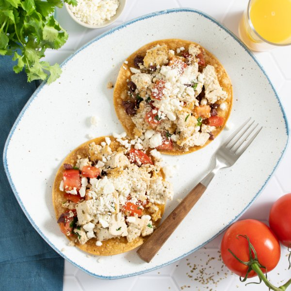

Tofu Scramble Breakfast Tostadas with Feta, Tomatoes, Olives & Parsley

Total Time
20 min
Nutrition (per serving)
474.6 kcalCalories
25.3 gProtein
34 gCarbs
29.4 gFat
Full nutrition table
| Calories | 474.6 kcal |
| Total fat | 29.4 g |
| Saturated fat | 6.4 g |
| Trans fat | 0.3 g |
| Cholesterol | 25.1 mg |
| Sodium | 598.7 mg |
| Carbohydrates | 34 g |
| Fiber | 6 g |
| Sugars | 5.8 g |
| Protein | 25.3 g |
| Potassium | 706 mg |
| Calcium | 510.3 mg |
| Iron | 5.5 mg |
| Vitamin A | 1146.8 IU |
| Vitamin C | 37.7 mg |
| Vitamin D | 4.5 IU |
Cookware
Ingredients
- 1 (4 oz) pkgcrumbled feta cheese
- 2 (12 oz) pkgsextra firm tofu
- 1 small bunchItalian (flat-leaf) parsley
- ½ cupKalamata olives, pitted
- 8small corn tortillas
- 4tomatoes
- black pepper
- extra virgin olive oil
- garlic powder
- oregano, dried
- salt
Steps
- Cut tofu in half along the long side. Sandwich tofu between clean towels or paper towels and place on a baking sheet pan. Place a cutting board with something heavy on top and set aside to press out excess water.2 (12 oz) pkgs extra firm tofu
- Preheat oven to 400°F.
- Arrange tortillas on a large baking sheet. Drizzle with oil on both sides, then season with salt.8 small corn tortillas
2 tsp extra virgin olive oil
¼ tsp salt - Place tortillas in the oven (it doesn't have to be fully heated) and bake until starting to crisp, 5-7 minutes. Remove from oven.
- Meanwhile, preheat a large skillet over medium-high heat.
- Once the skillet is hot, add oil and swirl to coat the bottom. Crumble tofu into large pieces with your fingers and add to the skillet along with spices. Cook, stirring occasionally, until tofu is golden brown, 6-8 minutes.4 tsp extra virgin olive oil
2 tsp oregano, dried
1 tsp garlic powder
½ tsp salt
¼ tsp black pepper - While the tofu is cooking, wash, dry, and medium dice tomatoes. Place in a medium bowl.4 tomatoes
- Wash, dry, and shave parsley leaves off the stems; discard stems and mince the leaves. Add to the bowl with the tomatoes.1 small bunch Italian (flat-leaf) parsley
- Roughly chop olives and add to the bowl.½ cup Kalamata olives, pitted
- When the tofu is done, remove from the heat. Add tomatoes, parsley, and olives, then stir to combine the scramble.
- To serve, divide tortillas between plates; top with tofu scramble and feta. Enjoy!1 (4 oz) pkg crumbled feta cheese